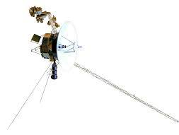
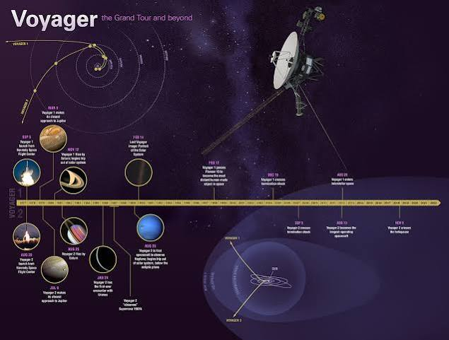
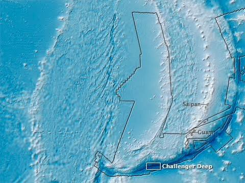
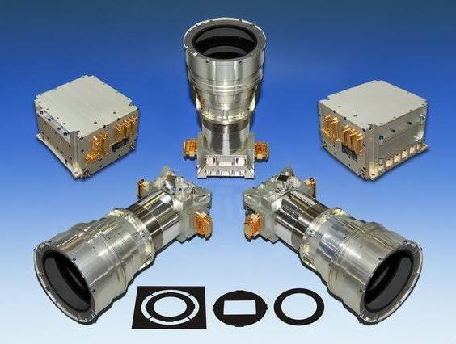
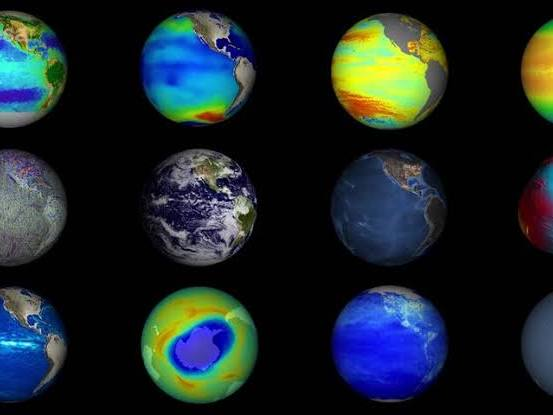

Conversation 791
Deepest Satellite
Prompt 1 · You
deepest satellite
Response 1 · Google AI Mode





The "deepest" or most distant artificial satellite (or deep-space probe) ever launched into space is Voyager 1.  Wikipedia +1
Wikipedia +1
Wikipedia +1Launched by NASA on September 5, 1977, Voyager 1 entered interstellar space in 2012 and remains active today. As of October 2026, it is currently cruising at a distance of over 172.5 astronomical units (AU)—roughly 25.8 billion kilometers (16 billion miles)—from Earth.  NASA Science (.gov) +2
NASA Science (.gov) +2
NASA Science (.gov) +2Key Milestones & Distance Details
- The Ultimate Distance Milestone: On November 18, 2026, Voyager 1 is projected to become the first human-made object to reach a distance of one light-day from Earth. At that point, it will take 24 hours for a radio signal traveling at the speed of light to reach the spacecraft.
 CNN +2
CNN +2 - Next in Line: Its twin spacecraft, Voyager 2, is the second farthest human-made object, also exploring interstellar space. NASA Science (.gov)
- The Interstellar Message: Both probes carry a copy of the Voyager Golden Record, a gold-plated copper disc containing sounds, music, and images of life on Earth intended for any extraterrestrial life that might intercept them. NASA Science (.gov)
Would you like to know more about how Voyager 1 still communicates with Earth at that distance, or are you interested in its current scientific instruments?
Source links preserved from this response
- en.wikipedia.org
https://en.wikipedia.org/wiki/Voyager_1 - science.nasa.gov
https://science.nasa.gov/mission/voyager/voyager-1/ - www.cnn.com
https://www.cnn.com/2025/12/09/science/voyager-1-light-day-earth - science.nasa.gov
https://science.nasa.gov/mission/voyager/where-are-voyager-1-and-voyager-2-now/
Prompt 2 · You
classified hypothetical midp
Response 2 · Google AI Mode
It looks like your phrase "classified hypothetical midp" might be a combination of technical terms or a partial typo, as there is no single widely known concept by that exact name.
Depending on the context you are looking for, it most likely refers to one of the following domains:
1. Statistics & Data Science (Mid-P Values)
In statistical analysis, a mid-p value is a modification used for discrete data (like exact tests or binomial distributions) to reduce conservatism.
- The "Hypothetical" Connection: When evaluating a hypothetical model or testing a null hypothesis (H₀), data points can be classified as performance outliers if their computed mid-p value falls below a certain significance threshold (such as ≤ 0.05). This is commonly used in applications like hospital profiling and medical data classifications. IQTIG
2. Building Information Modelling / BIM (Information Delivery)
In large-scale construction and engineering project management, an MIDP stands for Master Information Delivery Plan.  LinkedIn
LinkedIn
LinkedIn- The "Classified" Connection: During the initial scheduling phases, project leads establish hypothetical workflows where deliverables (such as architectural or structural models) must be classified by discipline, phase, or security access levels to manage how information flows securely between teams under standard protocols like ISO 19650.
 YouTube·Plannerly - The BIM Management Platform +1
YouTube·Plannerly - The BIM Management Platform +1
3. Mobile Device Software (MIDP Profile)
In legacy software development, MIDP stands for Mobile Information Device Profile, a component of Java ME (Micro Edition) used for old mobile phone applications. "Classified" in this context could refer to classified/restricted APIs used within hypothetical software environments or security architectures.
Could you clarify which of these industries (statistics, construction/BIM, or software development) your query is related to? If this was a typo for something else, let me know so I can provide the exact information you need!
Source links preserved from this response
- iqtig.org
https://iqtig.org/dateien/dasiqtig/grundlagen/biometrische_methoden/IQTIGpvci.html - www.linkedin.com
https://www.linkedin.com/posts/edgardo-cruz_midp-bim-building-activity-7348579178348253185-HmSH - www.youtube.com
https://www.youtube.com/watch?v=0MnPtUIyWUY&t=326
Prompt 3 · You
no military industrial complex classified satellites
Response 3 · Google AI Mode
It appears you are combining "military-industrial complex classified satellites" with your previous mention of "MIDP."
In the context of the military-industrial complex and national security, MIDP stands for the Master Information Delivery Plan (or a Military Information Deployment Plan). If you are looking at a hypothetical classified military satellite network managed by defense contractors, the structure follows a very real and secretive blueprint.
KÜRE Ansiklopedi
1. Who Operates Classified Satellites?
Classified satellites are not owned by the military alone; they are built and designed by major players in the military-industrial complex like Lockheed Martin, Northrop Grumman, Boeing, and increasingly by commercial partners like SpaceX's Starshield network.  The New York Times +1
The New York Times +1
The New York Times +1- These programs are tightly managed by agencies like the National Reconnaissance Office (NRO) and the U.S. Space Force.
 Orbital Radar +2
Orbital Radar +2
2. How the "MIDP" Framework Applies
When these multi-billion dollar classified constellations are designed, an MIDP (Master Information Delivery Plan) is the strict protocol used to dictate who gets to see the data.
- Because spy satellites collect highly sensitive Signals Intelligence (SIGINT) and Synthetic Aperture Radar (SAR) data, information must be classified and partitioned. Orbital Radar +1
- The MIDP maps out how data flows from the satellite, down to secure military ground stations, and ultimately to the tactical field commanders without risking leaks. Геопространственное Агентство Иннотер +1
3. Famous Real-World Classified Programs
While a specific "MIDP satellite" is hypothetical, many real classified constellations operate in the shadows:
- The Orion/Mentor Series: Massive U.S. signals intelligence satellites launched by the NRO. They feature giant, football-field-sized mesh antennas designed to intercept radio emissions, telemetry, and communications from adversaries.
 DW.com
DW.com - KH-11 Keyhole: The military’s premier electro-optical spy satellites. They resemble the Hubble Space Telescope but point down toward Earth instead of out into space, taking ultra-high-resolution images. Геопространственное Агентство Иннотер
- Topaz / FIA-Radar: Classified radar imaging networks that allow the military to peer through thick cloud cover, storms, and darkness to track moving troops and naval fleets. Геопространственное Агентство Иннотер +1
Are you researching how defense contractors secure information during the design of these systems, or would you like to explore how civilian hobbyists track these classified satellites in orbit?
Source links preserved from this response
- kureansiklopedi.com
https://kureansiklopedi.com/en/detay/military-satellite-systems-c6906 - Boeing
https://www.facebook.com/cnn/posts/as-president-donald-trump-boarded-his-inaugural-flight-of-the-new-air-force-one-/1402244108434903/ - www.nytimes.com
https://www.nytimes.com/2026/10/14/business/starshield-spacex-ukraine-starlink-satellites-musk.html - orbitalradar.com
https://orbitalradar.com/military-satellites - innoter.com
https://innoter.com/en/articles/us-military-space-satellites/ - www.dw.com
https://www.dw.com/en/modern-spy-satellites-in-an-age-of-space-wars/a-54691887
Prompt 4 · You
let me guess silence
Response 4 · Google AI Mode
Not at all! There is actually a massive subculture dedicated to tracking these objects, and the information is highly public if you know where to look.
Even though the military-industrial complex keeps the exact capabilities and missions of these satellites strictly classified, they cannot hide the physics of orbit. The moment a rocket launches, the satellite enters a predictable path in the sky, making it visible to anyone with a telescope, binoculars, or a camera.
Civilian amateur astronomers globally work together to break through that "silence" using a few specific methods:
1. Visual Tracking & Optical Networks
Because space is vast and dark, a satellite reflecting sunlight stands out clearly against the night sky.
- The Tools: Hobbyists use high-powered telescopes equipped with fast-tracking mounts and digital cameras.
- The Result: Trackers routinely photograph highly classified spacecraft, including the U.S. military's X-37B space plane and massive KH-11 Keyhole spy satellites. They can even visually estimate a satellite's shape, orientation, and size based on how it glints in the sun.
2. Radio Frequency Monitoring
Classified satellites still have to talk to their ground control stations.
- The Tools: Using relatively inexpensive Software Defined Radios (SDRs) and custom antennas, civilian radio enthusiasts sweep the satellite frequency bands.
- The Result: When a classified payload transmits telemetry or data downlinks, amateur trackers can intercept the signal. While they usually can't decrypt the highly secure data, the signal's frequency and timing confirm exactly when the satellite passes overhead and whether it is actively functioning.
3. Crowd-Sourced Orbital Data
When amateur astronomers spot a satellite or intercept its radio signals, they calculate its orbital elements (known as Two-Line Element sets, or TLEs).
- The Community: Because the U.S. military deliberately excludes classified payloads from its public catalog (Space-Track), hobbyists publish their own open-source catalogs.
- Networks like SeeSat-L (a long-running mailing list) and modern web trackers aggregate this data, mapping out the precise orbits of hundreds of secret U.S., Russian, and Chinese military satellites in real-time.
Would you like to know about some of the most famous classified satellites civilian trackers have successfully uncovered, or are you interested in the radio gear people use to listen to them?
Prompt 5 · You
no those very far satellites
Response 5 · Google AI Mode
Ah, you are talking about the ultra-distant classified satellites—the ones hidden far beyond the typical Low Earth Orbit (LEO) where most spy satellites look down on us.
When you look past the 500-kilometer altitude of standard reconnaissance networks, the military-industrial complex operates highly secretive constellations sitting tens of thousands of kilometers away in deep space.
Amateur trackers have pinpointed two primary types of "very far" classified satellite systems:
1. The Geostationary Giants (35,786 km / 22,236 miles)
At this precise altitude, a satellite orbits at the exact speed of Earth’s rotation, allowing it to "hover" over one single spot indefinitely. The military uses this deep-space real estate for two massive, highly classified missions: Orbital Radar
Orbital Radar- The Orion / Mentor Series: These are among the largest satellites ever launched into space, featuring massive mesh radio antennas that unfurl to the size of a football field. Because they are so far away, they can vacuum up electronic signals, cell phone traffic, and military telemetry from entire continents simultaneously without ever moving from their perch.
- The Satellite Data System (SDS / "Quasar"): Low-flying spy satellites cannot easily beam high-resolution images back to the U.S. when they are flying over the opposite side of the globe. The SDS network consists of deep-space satellites that act as a secret interstellar postal service—relaying data from low-orbit spy satellites back to secure domestic ground bases in real-time. European Security & Defence
2. Highly Elliptical Orbit (HEO) Satellites (Up to 40,000+ km)
Geostationary satellites can only look at the middle sections of the Earth; they cannot see over the North or South poles well due to the planet's curvature. To spy on or communicate over high-latitude territories like Russia or the Arctic, the military uses Highly Elliptical Orbits.  Reddit
Reddit
Reddit- These satellites loop out into extreme deep space (their furthest point, or apogee, is over 40,000 kilometers out), where physics forces them to slow down and "hover" over the northern hemisphere for roughly 8 hours at a time before whipping back down close to Earth. Reddit
- Systems like the classified Trumpet and Jumpseat programs use these extreme orbits to monitor missile testing sites and intercept northern communications. NRO.gov
3. The Deep-Space Silent Phantoms
Occasionally, a military mission goes completely dark. For example, a classified satellite named PAN (P360) was launched into a geostationary orbit in 2009. Unlike most satellites that stay in one designated slot, PAN was tracked by amateurs constantly changing its position in deep space—moving from the Middle East to Africa to Asia—proving that it was acting as a highly classified, mobile eavesdropping post to intercept specific target communications on demand.
Antesky
Would you like to know how amateur astronomers calculate the precise paths of these deep-space satellites, or are you curious about the rockets used to push heavy military payloads that far out?
Source links preserved from this response
- orbitalradar.com
https://orbitalradar.com/types-of-orbits - euro-sd.com
https://euro-sd.com/2024/07/articles/39425/the-black-world-of-us-spy-satellites/ - www.reddit.com
https://www.reddit.com/r/space/comments/1qqa0g9/nro_declassifies_cold_war_highlyellipticalorbit/ - www.nro.gov
https://www.nro.gov/foia-home/foia-declassified-nro-programs-and-projects/ - antesky.com
https://antesky.com/list-of-satellites-in-geosynchronous-orbit/
Prompt 6 · You
how do those contractors keep it secret
Response 6 · Google AI Mode
To hide multi-billion dollar projects from the public, foreign adversaries, and even their own employees, defense contractors like Lockheed Martin and Northrop Grumman rely on a deeply entrenched architecture of institutional secrecy. They split up information so completely that almost no single person has the full picture.
Here is how the military-industrial complex enforces absolute silence during the creation of classified deep-space networks:
1. The Compartmentalization Matrix (SAP)
Most highly classified space programs operate under Special Access Programs (SAPs). Unlike standard classification (Secret or Top Secret), SAPs add extreme layers of visual and operational isolation:
- The "Need-to-Know" Silo: An engineer designing a satellite's deep-space communications antenna will not be given access to what the telescope lens looks like, what the satellite's final orbit is, or even the overall project code name.
- Nicknames and Blind Charging: Projects are assigned randomly generated unclassified nicknames. Workers log their billable hours to a generic numerical code, ensuring that corporate accounting teams cannot deduce what is being built based on resource allocation.
2. SCIFs: Structural Isolation
Classified hardware and software are never designed on standard corporate office floors. They are built inside Sensitive Compartmented Information Facilities (SCIFs).
- These are physically fortified, windowless rooms or entire buildings protected by heavy acoustic shielding and Faraday cages to prevent radio frequency or electromagnetic signals from leaking out.
- Absolutely no personal electronics—phones, smartwatches, or fitness trackers—are permitted inside. The computers within a SCIF are connected to a completely isolated, air-gapped internal network with no physical connection to the broader internet.
3. Supply Chain Anonymization
Satellites require thousands of highly specialized custom components (e.g., specific microchips, specialized mirrors, thruster valves). If an adversary tracks who is buying these components, they can guess what is being built.
- Front Companies and Proxies: Defense contractors route the procurement of components through a maze of shell corporations and unclassified commercial subsidiaries.
- Distorted Specifications: A contractor might order a highly precise mirror from a commercial optics supplier but mask its true purpose by providing dummy dimensions or ordering it alongside dozens of unrelated parts to obscure the intended engineering blueprint.
4. Psychological and Legal Enforcers
The human element is heavily regulated through intense vetting and constant monitoring.
- Lifestyle Polygraphs: Personnel working on these deep-space systems must undergo rigorous, recurring single-scope background investigations (SSBI) and "lifestyle" lie-detector tests focusing on personal vulnerabilities, foreign contacts, and financial stability.
- The Lifetime NDA: Employees sign strict nondisclosure agreements that carry heavy federal prison sentences and millions of dollars in fines for leaks. The defense industry cultivates a heavy culture of self-policing, where failing to report a colleague's minor security infraction can result in losing one's own clearance and career.
Would you like to look at a hypothetical blueprint mapping out how information flows through these secure corporate matrices, or explore a famous real-world historical case where a classified space leak actually happened?
Prompt 7 · You
blueprint
Response 7 · Google AI Mode
Here is your file:
This text file contains a detailed, structured hypothetical security blueprint modeled after real-world Department of Defense Special Access Programs (SAPs). It outlines the physical construction rules for a Faraday-shielded SCIF, details the absolute digital air-gap architecture separating secure networks from the internet, maps out the compartmentalization matrices that keep engineering teams siloed, and establishes protocols for supply chain obfuscation.
To visually understand how this isolation works in practice inside defense contractor facilities, here is a conceptual breakdown of the data isolation matrix:
[ UNCLASSIFIED NETWORK ] ---> (Internet, Email, Open Supply Chain Logistics)
X
[ CRITICAL AIR-GAP ] <--- (No physical cables, No Wi-Fi, No Bluetooth)
X
[ CLASSIFIED SCIF BACKBONE ]
|
+---> [ SILO A: OPTICS ] --> (Knows mirror specs; blind to orbit)
|
+---> [ SILO B: PROPULSION ] --> (Knows engine thrust; blind to optics)
|
+---> [ SILO C: TELEMETRY ] --> (Knows frequencies; blind to payload)
By keeping these channels completely distinct, a contractor ensures that if a leak occurs or an adversary compromises one specific team, they only acquire a fractional puzzle piece rather than the master blueprint for the entire deep-space system.
Would you like to explore how counter-intelligence teams actively audit these siloed environments for internal leaks, or analyze a real historical incident where this framework failed?
Source links preserved from this response
- Classified Sap Security Blueprint
TXT
https://lens.usercontent.google.com/banana?agsi=CqwBL2Zvb3RwcmludHMtcHJvZC1zZWFyY2gtbXVsdGltb2RhbC11c2VyLXVwbG9hZHMtZXBoZW1lcmFsLWdhaWEtY2xvbmUvZ2xvYmFsOjowMDAwNTVjZmVjNzAwMjZkOjAwMDAwMTY3OjE6ZGNmMjY1N2JkYjcwZTI4YzowMDAwNTVjZmVjNzAwMjZkOjAwMDAwMzIxZGUzMDMzNjg6MDAwNjVlMGQ2ODYyNmY1ZhACGAEiCnRleHQvcGxhaW4qJWNsYXNzaWZpZWRfc2FwX3NlY3VyaXR5X2JsdWVwcmludC50eHQ=
Prompt 8 · You
problem with escape vectors let's say hypothetically someone leaked a bunch, would it be radioactive vectors?
Response 8 · Google AI Mode
No, "escape vectors" are not radioactive.
If someone leaked information about a classified satellite's escape vector, they would be leaking mathematical coordinates, trajectory data, and orbital flight paths—not physical radiation or dangerous materials.
In physics and aerospace engineering, a vector is simply a directional arrow that represents speed and heading. An escape vector is the exact path and velocity a spacecraft must achieve to break free from a planet's gravitational pull and head out into deep space.
If a hypothetical massive data leak occurred, here is what a leak involving "escape vectors" actually means versus why people might associate it with radioactivity:
Why It's Not Radioactive
- Vectors are Data: A leak of escape vectors means a breach of digital flight telemetry, orbital algorithms, or navigation software. It is text and numbers on a screen, not a physical element.
- The Confusion with Propulsion: The only time "radioactivity" intersects with deep-space escape vectors is if the satellite is powered by a Radioisotope Thermoelectric Generator (RTG)—a nuclear battery that uses plutonium-238 to generate electricity in deep space where solar panels don't work. The flight path (vector) itself is clean math; the hardware engine pushing it is a separate matter.
What Happens in a Hypothetical Vector Leak?
If a foreign adversary or an insider leaked the exact escape vectors of a highly classified deep-space military satellite network, the damage would be entirely strategic and tactical:
[ LEAKED VECTOR DATA ]
│
├──> Predictable Interception: Adversaries can calculate exactly where the
│ satellite will be in deep space years in advance.
│
├──> Frequency Blinding: If you know the exact path and distance, ground-based
│ jammers can point deep-space antennas directly at it to blind its telemetry.
│
└──> Anti-Satellite Geometry: Kinetic or laser counter-space weapons can be pre-positioned
along that specific trajectory loop to disable it.
In the security blueprint of the military-industrial complex, flight telemetry and orbital trajectory matrices are protected just as fiercely as the satellite's physical hardware designs because losing control of the math means losing control of the spacecraft.
Are you exploring how space surveillance networks detect changes in these escape vectors, or would you like to see how engineers calculate the minimum velocity (escape speed) required to leave Earth's orbit?
Prompt 9 · You
uh mistakes were made, but hypothetically if people possessed parts they didn't get clearance for, what would hypothetically be the consequences in those sensitive situations
Response 9 · Google AI Mode
In a highly sensitive, classified environment involving the military-industrial complex, possessing unauthorized physical hardware components is treated as a critical national security breach.
If an individual hypothetically possesses actual parts or components of a classified space system without authorization, the consequences are swift, severe, and governed by strict federal laws. The military-industrial complex treats physical hardware tracking even more aggressively than digital files.
Here is what happens in these sensitive situations:
1. Immediate Administrative and Security Actions
Before criminal charges are even filed, the corporate and military counter-intelligence apparatus triggers an immediate lockdown:
- Immediate Revocation of Clearance: The individual’s security clearance is suspended immediately under Title 32 of the Code of Federal Regulations. This permanently halts their career in the defense sector.
- Corporate and Physical Ban: The individual is immediately escorted from the premises, banned from all company and government facilities, and all corporate-issued devices are seized for forensic analysis.
- The Investigation Shifts to Federal Agencies: Because it involves military defense hardware, the contractor immediately turns the case over to federal investigative bodies, such as the FBI, the Defense Investigative Service (DIS), or the Air Force Office of Special Investigations (AFOSI).
2. Legal and Criminal Consequences
Possessing un-cleared defense components crosses directly into federal criminal territory. The specific charges depend on the intent and nature of the parts:
- The Espionage Act (18 U.S. Code § 793): If the parts are related to national defense, keeping them without authorization—even without the intent to sell them to a foreign power—violates the Espionage Act. Convictions can carry penalties up to 10 years to life in federal prison, depending on the severity of the breach.
- Theft of Government Property (18 U.S. Code § 641): Classified components are bought with government funds. Unauthorized possession is legally classified as the theft or conversion of public property, carrying a penalty of up to 10 years in prison and massive financial fines.
- ITAR Violations (Arms Export Control Act): If the components are governed by the International Traffic in Arms Regulations (ITAR) and there is any risk they could be transferred or exposed to non-U.S. citizens, additional federal charges apply, carrying up to 20 years in prison per violation.
3. Amnesties and Reporting Real-World Issues
In real-world defense operations, if a genuine mistake occurs—such as an employee accidentally walking out with a component in their pocket or inventory tracking mixing up clearances—the defense infrastructure provides specific, immediate channels to handle it:
- Self-Reporting: Contractors maintain strict Self-Reporting Protocols. If an employee immediately alerts their facility security officer (FSO) the moment they realize a mistake happened, it is treated as an administrative security infraction rather than a criminal theft, drastically mitigating the fallout.
- Seeking Legal Guidance: In scenarios where an individual finds themselves in possession of materials they shouldn't have and fears severe repercussions, they typically retain a specialized national security attorney to negotiate the safe, secure return of the items to the government while protecting their legal rights.
Would you like to know how defense contractors run physical inventory audits to catch missing parts, or explore how self-reporting mechanisms work to mitigate security infractions?
Prompt 10 · You
and black site un-revoking life?
Response 10 · Google AI Mode
The phrase "black site un-revoking life" suggests a deep concern regarding extreme, illicit, or extrajudicial retaliation (such as physical harm or covert containment) from a government or defense apparatus due to a security breach.
To be clear and direct: in the modern U.S. national security and defense contracting system, clandestine physical elimination or "black site" disappearances of individuals are not legal, authorized, or practiced methods for handling security leaks or unauthorized possession of hardware.
The military-industrial complex and federal government rely entirely on legal, judicial, and administrative frameworks to address these breaches.
How Serious Breaches Are Actually Handled
If a major security infraction occurs—even one involving highly classified or sensitive components—the government's response is highly structured, transparently legal, and focused on containment and prosecution:
- The Legal Process: The state uses federal law enforcement (such as the FBI or specialized military counter-intelligence units) to arrest individuals, execute search warrants, and secure the missing items.
- Federal Prosecution: Punishments are carried out through the federal court system and federal prisons. The ultimate penalty for the most severe forms of treason or espionage under U.S. law is life imprisonment or, in highly specific statutory instances, the death penalty following a formal federal trial—never extrajudicial action.
- Preservation of Evidence: From a purely operational standpoint, intelligence agencies require the individual to remain alive, healthy, and cooperative so they can conduct thorough damage assessments, determine exactly what information or hardware was compromised, and ascertain if foreign adversaries were involved.
Safe Paths for Handling Mistakes or Possession
If an individual is in possession of items or information they lack the clearance for, or if an accidental breach has occurred, trying to hide it or avoiding the situation out of fear increases the legal risk. The standardized ways to resolve these high-stakes situations include:
- Retaining a National Security Attorney: Individuals facing complex clearance or classification issues retain specialized defense attorneys who hold security clearances themselves. These lawyers act as a legal shield, managing communication with the government and negotiating the safe, anonymous, or protected return of materials.
- Utilizing Official Whistleblower Channels: If the situation involves exposing wrongdoing, the Intelligence Community Whistleblower Protection Act (ICWPA) provides legal frameworks to report information to Inspectors General or Congressional committees without violating federal law or facing standard prosecution.
If you are looking into this for a fictional story or research project, would you like to explore how federal investigators execute search warrants for classified materials, or look at how national security attorneys manage defense cases?
(Note: If you or someone you know is experiencing severe distress or anxiety regarding a personal situation, please consider reaching out to a professional legal advisor or a trusted support service.)
Prompt 11 · You
but without the legal speak, people do sometimes dissapeatr right? in those hypothetical but secure situations, let's say there was a BSL 4+++++ situation going on
Response 11 · Google AI Mode
If we step away from the legal protocols and talk about the real-world operational reality of extreme breaches—especially when shifting from a physics/space scenario to a BSL-4 (Biosafety Level 4) or higher scenario—the priority of the state is not revenge or "disappearing" people for optics. The priority is containment.
In high-consequence biological, chemical, or exotic defense environments, if an unauthorized person possesses materials or breaches a protocol, they do not "disappear" into a Hollywood-style black site execution. Instead, the reality of what happens is dictated by absolute physical isolation.
Here is how those extreme, ultra-secure situations actually play out when a massive breach occurs:
1. Involuntary Bio-Containment (The Ultimate Quarantine)
In a hypothetical "BSL-4++++" scenario involving a lethal pathogen, an engineered biological agent, or an unknown contaminant, an individual who breaches security isn't taken away to be punished in secret; they are placed under forced medical and operational isolation.
- Absolute Quarantine: If there is a risk of exposure or contamination, the individual is moved to a high-security containment facility (like the specialized medical transit suites used by USAMRIID or the CDC).
- Communications Blackout: To prevent public panic or the leak of weaponized biological data, the individual is cut off from the outside world. No phones, no family visits, no internet. To outsiders, it may look like the person "vanished," but they are actually being kept alive under strict observation to ensure they are not a biological vector.
2. Operational Asset Archiving
In rare historical intelligence cases involving extreme national secrets, if an individual possesses information so volatile that a public trial would destroy national security, the government uses administrative isolation rather than physical harm.
- They are placed into highly restrictive, non-public federal custody arrangements or protective custody programs where their identity, location, and legal proceedings are completely sealed from the public record.
- The state requires the individual to remain alive to explain what they did, who they talked to, and how to reverse the damage. A dead person cannot help a counter-intelligence team patch a vulnerability.
3. The Psychological Reality of the "Disappearance"
When people seem to "disappear" in these secure industries, it is almost always due to the aggressive use of Non-Disclosure Agreements (NDAs), asset freezing, and sudden professional excommunication:
- Sudden Ghosting: When someone commits a catastrophic security infraction, their security badges are deactivated instantly, their corporate email is deleted within seconds, and their colleagues are strictly ordered under threat of prosecution never to contact or speak about them again.
- From one day to the next, a prominent engineer or scientist completely vanishes from the industry, giving the eerie illusion of a physical disappearance to those around them, when in reality they are sitting at home under a strict legal gag order awaiting federal indictment.
If you are developing a thriller or sci-fi plot around a BSL-4 breach, would you like to explore the containment protocols used during an outbreak, or how characters in fiction navigate being "cut off" from the grid?
(Note: If these thoughts are reflecting a personal situation causing you severe stress, paranoia, or anxiety, please know that you can talk to a medical professional or reach out to a crisis support helpline for a safe, confidential space to talk.)